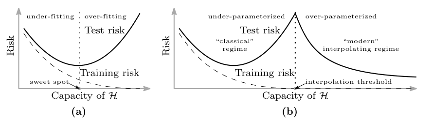
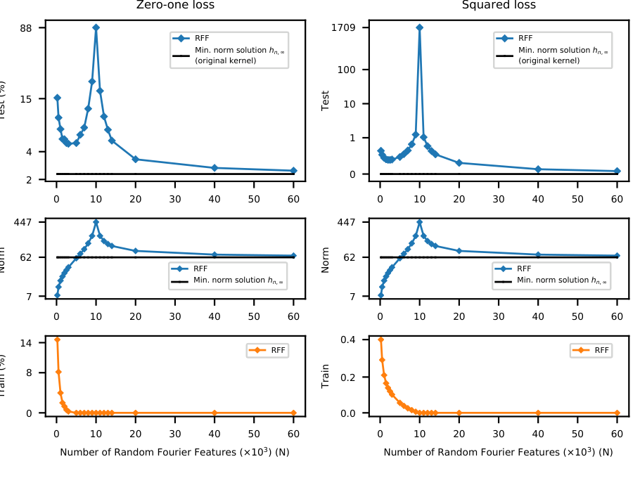
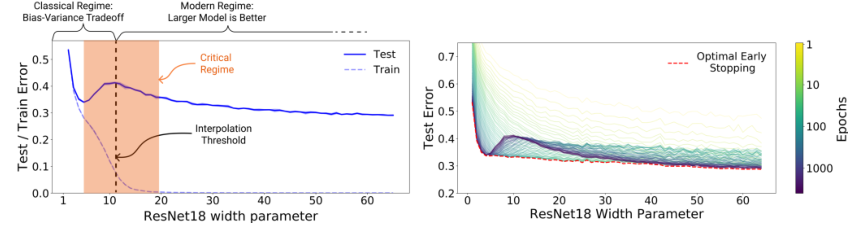
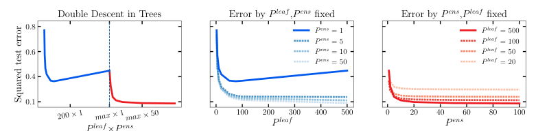
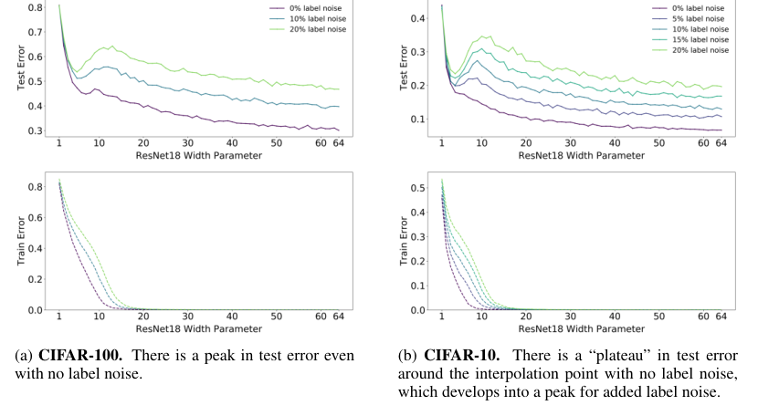
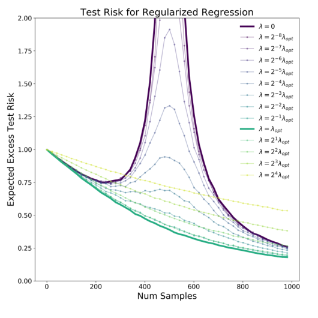

Bigger models get better again past the interpolation threshold
Belkin and Nakkiran rebuilt double descent from random features to ResNets, and the after-record narrows it from a law in parameter count to a curve that depends on how you measure complexity.
Reconciling modern machine learning practice and the bias-variance trade-off
Read the paperBreakthroughs in machine learning are rapidly changing science and society, yet our fundamental understanding of this technology has lagged far behind. Indeed, one of the central tenets of the field, the bias-variance trade-off, appears to be at odds with the observed behavior of methods used in the modern machine learning practice. The bias-variance trade-off implies that a model should balance under-fitting and over-fitting: rich enough to express underlying structure in data, simple enough to avoid fitting spurious patterns. However, in the modern practice, very rich models such as neural networks are trained to exactly fit (i.e., interpolate) the data. Classically, such models would be considered over-fit, and yet they often obtain high accuracy on test data. This apparent contradiction has raised questions about the mathematical foundations of machine learning and their relevance to practitioners.
In this paper, we reconcile the classical understanding and the modern practice within a unified performance curve. This "double descent" curve subsumes the textbook U-shaped bias-variance trade-off curve by showing how increasing model capacity beyond the point of interpolation results in improved performance. We provide evidence for the existence and ubiquity of double descent for a wide spectrum of models and datasets, and we posit a mechanism for its emergence. This connection between the performance and the structure of machine learning models delineates the limits of classical analyses, and has implications for both the theory and practice of machine learning.1
The overfitting rule modern networks break
Classical statistical learning reads test risk as a U in model capacity. Too little capacity and the model underfits. Too much and it fits the noise. Between them sits a sweet spot. The operational rule that follows is the one every textbook states: a model with zero training error is overfit to the training data and will typically generalize poorly.1
Modern networks break that rule in plain sight. A ResNet with millions of parameters drives its training error to zero and still generalizes well. Belkin and colleagues,1 and then Nakkiran and colleagues for deep networks,2 answer with a single curve. Once capacity passes the point where the model can exactly fit the data, test risk peaks and then falls a second time. That the capacity is genuinely there is not in doubt. Zhang and colleagues showed the same architectures fit a random labeling of their training set to zero error, and fit even unstructured random-noise inputs, largely unaffected by explicit regularization.3 Interpolation is the normal operating point, not a pathology.
A second descent past the interpolation threshold
Let us start where Belkin starts, with the shape itself. Their schematic sets the classical picture beside the one the data actually draw.

Read panel (b) against panel (a). In (a) the solid test-risk curve dips to the sweet spot and rises again as capacity grows: the whole story classical theory tells. In (b) the same rise continues to a spike at the dotted interpolation threshold, and then the curve turns and descends again through the "modern" regime, often below the classical sweet spot. The dashed training-risk curve reaches zero at the threshold and holds there, so every predictor to the right of the dotted line fits the training data exactly.1
The threshold has a definite location. Belkin identifies capacity with the number of parameters a function needs, and the model can first interpolate once that count reaches the number of training points.
Here N is the number of parameters (for the random-feature model below, the number of features), n the number of training points, and K the number of classes.1 The peak is not an artifact of one setup. Working from a statistical-physics angle, Spigler and colleagues had independently found a sharp "jamming" transition at the same interpolation point, with generalization error rising to a cusp there before a slow decay across the over-parameterized regime.4
Larger classes hold smoother interpolants
If every predictor past the threshold has zero training error, why should the larger ones test better? Belkin's cleanest evidence answers on real data. They fit a random Fourier features model to a ten-thousand-example subset of MNIST, sweeping the number of features N straight through the threshold at N = n = 10^{4}.

Look at the top and middle rows together. Test risk climbs to its spike exactly at N = 10^{4} and then descends; the coefficient \ell_2 norm peaks at the same point and then falls. Past the threshold the training data no longer pin down a single fit; infinitely many predictors interpolate them, and squared-loss minimization selects the one of smallest norm. Choosing the smoothest function that fits the data exactly is a form of Occam's razor, and a larger feature class contains lower-norm interpolants, so risk keeps falling as N grows. The flat reference line is the min-norm kernel predictor the finite models approach from above, and it beats every finite-N fit.1 The small-norm story is not only a picture. For minimum-\ell_2-norm ("ridgeless") interpolation in high dimensions, Hastie and colleagues recover the double descent curve and the benefit of over-parameterization in a precise, closed form.5
Effective model complexity ties the axes together
Belkin drew the curve in parameter count. Nakkiran and colleagues showed that parameter count is only one way to walk along it. In deep networks the same shape appears whether you grow the model or simply train it longer.

The left panel is Belkin's curve in a real network: test error peaks at the interpolation width and falls again as the ResNet18 grows toward its standard width of 64. The right panel traces test error against training epochs at fixed size and finds the same rise-then-fall in time. To hold both under one description, Nakkiran defines the effective model complexity of a training procedure as the largest training set it can still drive to near-zero error.
- \mathrm{EMC}_{\mathcal{D},\epsilon}the effective complexity, measured in training samples.
- Tthe training procedure taken whole: architecture, optimizer, and length of training.
- nthe largest sample size the procedure still fits to near-zero error.
- \mathrm{Error}_S(T(S))the mean training error of the learned model on the sample S.
- \epsilonthe "near-zero error" cutoff, used heuristically at 0.1.
The definition earns its keep by fixing where the peak sits. Nakkiran's Generalized Double Descent hypothesis says that raising complexity lowers test error when the effective complexity is well below n or well above it. Only in a critical band around \mathrm{EMC} \approx n can raising it hurt.2 Because the peak tracks n rather than any fixed model, adding data can slide the critical band onto a network that used to sit safely past it. This is the abstract's counterintuitive claim that more data can hurt. On a fixed Transformer for German-to-English translation, raising the training set from 4k to 18k sentences, a factor of 4.5, pushes test loss up across a band of model sizes.2
How much of it is the x-axis
Does the curve survive its own x-axis? Belkin's strongest claim is reach: one curve across random features, neural nets, random forests, and boosting, presented as evidence for the existence and ubiquity of double descent.1 Curth and colleagues took the non-deep half of that claim at full strength and reproduced it, then asked what the single parameter-count axis was actually counting.

Their finding is that the axis quietly changes what it measures. A single tree grows capacity by adding leaves, but it cannot have more leaves than it has training points. Once the leaf count caps out, the experiment keeps "adding parameters" by averaging more full-depth trees, so the model has become a random forest at exactly the peak. Hold the ensemble size fixed and error is a plain convex curve in leaf count (center); hold the leaf count fixed and error is a plain descending curve in ensemble size (right). The composite peak (left) exists only at the hand-off between the two. Choose a different hand-off point and the peak moves or disappears. Along an effective-parameter axis the curves fold back to convex shapes, so the second descent's location is "not inherently tied to the interpolation threshold."6 The same reading covers boosting and the linear RFF case.
The scope of the correction matters as much as the correction. Curth and colleagues confine their re-analysis to non-deep methods and do not touch Nakkiran's ResNet, CNN, and Transformer results.6 Read honestly, this trims Belkin's claim of ubiquity across model families; it leaves model-wise and epoch-wise double descent in deep networks standing.
What noise and regularization do to the peak
Even where the deep effect is real, two knobs decide how sharp it is. The first is label noise. Nakkiran and colleagues report seeing double descent most strongly under label noise, which invites the reading that the peak is really a noise artifact. Their own figure refuses that reading.

Compare the two panels. On CIFAR-100 (a) a test-error peak sits near the interpolation width even with no added label noise, and grows taller as noise rises. On CIFAR-10 (b) the no-noise curve shows only a plateau at the interpolation point, which added noise deepens into a clear peak.2 So label noise amplifies and sharpens the peak, and it can be enough to turn a plateau into one, but it is not strictly required for the effect to appear.
The second knob is regularization, and here the after-record is sharper still. Nakkiran, Venkat, Kakade and Ma prove that for isotropic linear regression, optimally-tuned ridge regularization makes test risk monotone in both sample size and model size. Once \lambda is tuned, bigger is never worse and more data never hurts. The same tuning empirically flattens the peak for CNNs on CIFAR-100.7

The unregularized curve in the figure is a textbook sample-wise double descent, spiking as the sample count nears the dimension; the optimal-\lambda curve simply descends.7 Belkin had already noted that regularization can attenuate or mask the interpolation peak, so this does not contradict the original account; it bounds it.1 Double descent is largely a description of under-regularized training. The bound has its own limits worth stating: the optimal \lambda changes with model size, so no single value serves everywhere, and for non-Gaussian, heteroscedastic data optimally-tuned ridge can still be non-monotone.7
A real effect, not a universal law
One open question sits underneath the rest: what actually drives the peak. Nakkiran and colleagues argue it is not fundamentally about label noise but about model misspecification.2 Mei and Montanari cut against a tidy answer there: their analytically tractable random-features model produces the full double descent curve without assuming any ad hoc misspecification, from the variance of the min-norm interpolant alone.8 The honest reading is that label noise and misspecification each amplify the peak, and neither has been shown to be necessary.
The effect is real and reproduces widely: from random features and kernels to ResNets, CNNs and Transformers, and along model size, training epochs, and dataset size.2 What the after-record removes is the strong reading, that double descent is a fixed law in parameter count extending the classical U-curve. Its peak can be relocated by relabeling the complexity axis,6 sharpened or nearly erased by label noise, and removed outright by optimal ridge regularization.7 Treat it as a robust account of under-regularized interpolation rather than a universal law. A well-regularized deep architecture that showed no interpolation peak in standard training would narrow the claim further; an unregularized one that showed none would be the result that breaks it.
Sources
- arXiv / PNAS · Belkin, Hsu, Ma & Mandal, "Reconciling modern machine learning practice and the bias-variance trade-off" (2019)
- arXiv / ICLR 2020 · Nakkiran, Kaplun, Bansal, Yang, Barak & Sutskever, "Deep Double Descent: Where Bigger Models and More Data Hurt" (2019)
- arXiv / ICLR 2017 · Zhang, Bengio, Hardt, Recht & Vinyals, "Understanding deep learning requires rethinking generalization" (2017)
- arXiv / J. Phys. A · Spigler, Geiger, d'Ascoli, Sagun, Biroli & Wyart, "A jamming transition from under- to over-parametrization affects loss landscape and generalization" (2018)
- arXiv · Hastie, Montanari, Rosset & Tibshirani, "Surprises in High-Dimensional Ridgeless Least Squares Interpolation" (2019)
- arXiv / NeurIPS 2023 · Curth, Jeffares & van der Schaar, "A U-turn on Double Descent: Rethinking the Role of the Number of Parameters" (2023)
- arXiv / ICLR 2021 · Nakkiran, Venkat, Kakade & Ma, "Optimal Regularization Can Mitigate Double Descent" (2020)
- arXiv · Mei & Montanari, "The Generalization Error of Random Features Regression: Precise Asymptotics and the Double Descent Curve" (2019)